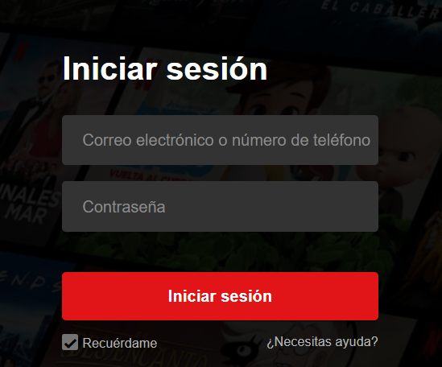
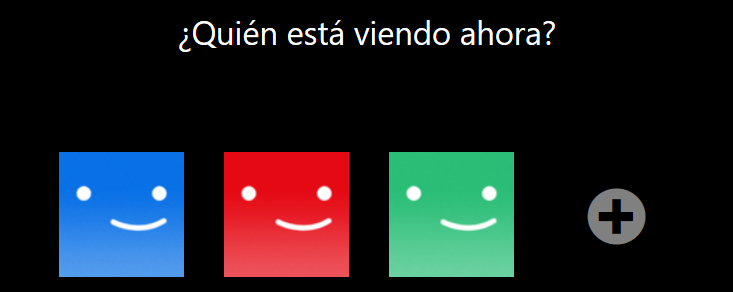
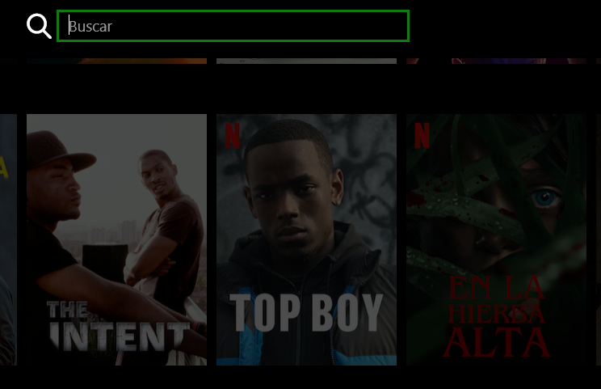

ABUDU TOURAY M8 UF4 - DAW2¶

NETFLIX¶
1.1 Primeros pasos con Netflix¶
¡Te damos la bienvenida a Netflix! Nos encanta que te hayas unido a nosotros y estamos deseando ayudarte a aprovechar al máximo tu suscripción. A continuación encontrarás información útil para empezar a utilizar el servicio. Si no encuentras un tema concreto, prueba a buscarlo en nuestro Centro de ayuda. Si aún no te has suscrito y quieres ver más información, visita ¿Qué es Netflix?
1.2 Iniciar Session¶
Una vez que hayas abierto la aplicación de Netflix o el sitio web de Netflix, basta con que selecciones Iniciar sesión para acceder a tu cuenta y empezar a ver contenido en streaming. Puedes iniciar sesión en cualquier dispositivo compatible con Netflix, o incluso en varios dispositivos compatibles. Si surge algún problema, revisa los pasos de resolución de problemas en No puedo iniciar sesión en Netflix. Si aún no tienes la aplicación de Netflix, visita ¿Cómo descargo la aplicación de Netflix?
{kind=link}
1.3 Crear perfiles¶
Puedes crear perfiles para los miembros de tu hogar, a fin de que disfruten de su propia experiencia de Netflix personalizada. Tu cuenta puede tener hasta cinco perfiles individuales, y puedes establecer un nivel de clasificación por edades para cada uno de ellos. Cada perfil contará con sus propias recomendaciones basadas en la clasificación y las preferencias del perfil correspondiente.
{kind=link}
1.4 Encontrar series y películas¶
Para encontrar tu próximo maratón, busca títulos que te interesen o explora las sugerencias que proporciona Netflix. Cuando empieces a ver y valorar títulos, nuestras recomendaciones te ofrecerán cada vez más contenido acorde con tus gustos. También puedes habilitar los subtítulos y el audio en otros idiomas en muchos títulos, o bien buscar títulos con tu idioma de audio o subtítulos preferido.
{kind=link}
1.5 Gestionar tu cuenta¶
Puedes actualizar la información de tu cuenta en cualquier momento, así como cambiar el correo electrónico, el número de teléfono o incluso tu plan de suscripción seleccionando la opción Cuenta en el menú de Netflix. En la página Cuenta también puedes ajustar controles de contenido, como la calidad de la reproducción, el idioma o los subtítulos. En los siguientes artículos encontrarás más información sobre como gestionar tu cuenta.